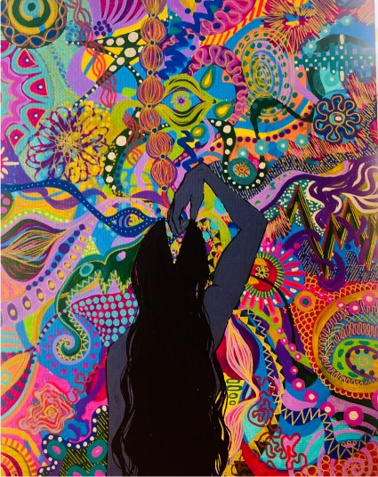
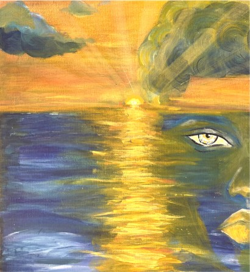
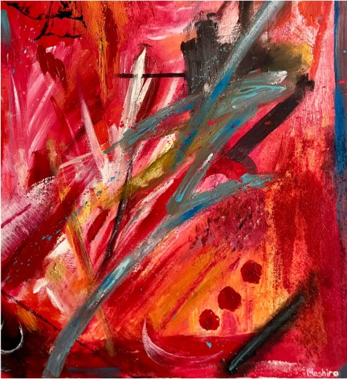
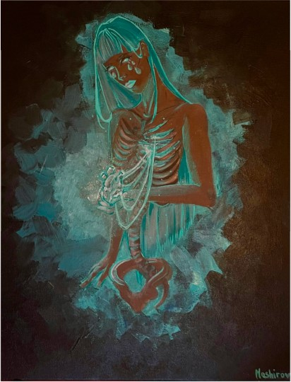
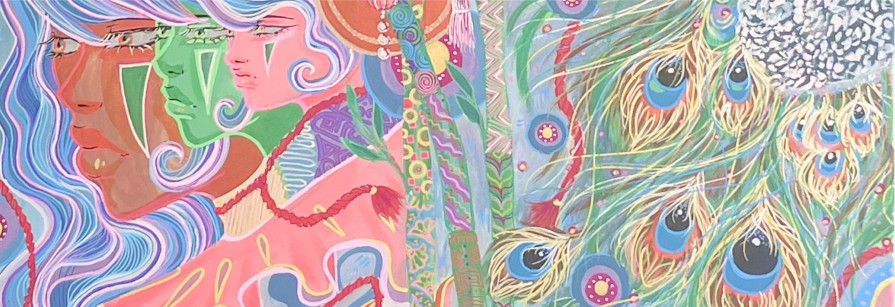
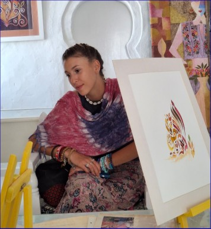
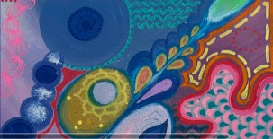

MASHIRO
À PARTIR DU
01.11.26NOTRE GALERIE
Un concept
Chaque mois, nous invitons une nouvelle artiste à investir la galerie. Pendant trente jours, elle est seule à l’honneur : ses œuvres sont exposées, racontées et mises en vente.
Pas de foule d’artistes à parcourir en diagonale, pas de catalogue sans fin. Juste le temps de s’arrêter, de découvrir une démarche, un univers, une voix singulière, et de laisser une œuvre vous accompagner si elle vous parle.
Notre galerie est entièrement dédiée aux artistes femmes. Parce qu’elles restent encore trop peu représentées dans les galeries et les collections, nous avons choisi de leur donner toute la place : une scène, une voix, et le temps d’être vraiment regardées.

POURQUOI CE FORMAT ?
Parce que l’art mérite de l’attention. En mettant une seule artiste en lumière à la fois, nous voulons créer un vrai tête-à-tête entre ses œuvres et vous, et soutenir directement celles qui les créent.
Parce que chaque mois est une découverte. Revenez régulièrement : vous y trouverez toujours un regard nouveau.
Rendez-vous ce mois-ci pour rencontrer notre artiste du moment.
NOTRE COLLECTION
Œuvres de la saison





ARTISTE DU MOIS
MASHIRO
Je m’appelle Eva, alias Mashiro. Je dessine depuis que je sais tenir un stylo. Je peins depuis que les feutres ne suffisent plus.
Aujourd’hui, je veux que mes œuvres vivent comme des talismans, des histoires, des traces sensibles.

J’ai exploré la poterie, la peinture, l’epoxy, la photographie, la couture, le crochet, la sculpture, la danse, l’écriture, la performance… et je n’en resterai pas là.
Mon univers navigue entre douceur et obscurité : paysages, aquarelles, portraits, créatures hybrides, symboles sacrés.
« PARTOGENÈSE »
Une peinture abstraite et colorée qui évoque le monde cellulaire et l’origine de la vie. À travers des formes organiques s’entrelaçant avec des gouttes de différentes tailles et des nuances vibrantes de bleu, violet, rose et doré.
L’œuvre illustre une création, une naissance où la matière semble apparaître et se multiplier d’elle-même.

EMPLACEMENT ET COORDONNÉES
18 Avenue des Champs Fleuris
04.78.03.56.33
SUIVEZ-NOUS
Instagram · LinkedIn · X